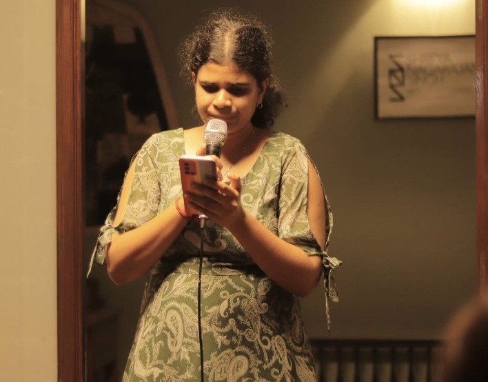

Hi, I’m Adithi Varadarajan
Software Engineer & Product-focused backend architect
Building scalable backend systems, cloud-native applications, and integrating AI/ML models into production-ready platforms

About Me
I’m a Software Engineer with 4+ years of experience architecting scalable backend systems, building cloud-native applications, and integrating AI/ML models into production platforms. At Bank of America, I engineered distributed pipelines with Spring Boot and Ansible, accelerating release cycles and boosting developer productivity by 40%.
I’m passionate about combining algorithms with system design to deliver robust, real-world solutions. I thrive on deploying intelligent architectures that balance scalability, performance, and reliability.
Currently pursuing a Master’s in Computer Science at Indiana University Bloomington (GPA 3.67), I focus on intelligent infrastructure and cloud-native systems. My work on Credify, a blockchain-powered reusable identity verification platform, earned me 2nd runner-up at the InnoQuest Innovation Challenge.
This summer, I’m a participant in The Mill’s Startup Summer Accelerator, leading product management, technical architecture, and customer discovery for an early-stage venture. This experience has sharpened my entrepreneurial mindset, strengthened my leadership abilities, and taught me to iterate rapidly from MVP to validation.
Beyond engineering, I’m a strong advocate of effective communication and team collaboration. I’ve held leadership roles in Toastmasters International as a division-level contest chair and voting judge, and in Guindy Times, where I led editorial teams and honed people management skills. These experiences have shaped me into a professional who blends technical depth with entrepreneurial and interpersonal effectiveness.
Experience
Startup Summer Accelerator Participant
The Mill
Bloomington, Indiana, United States
Jun 2025 – Jul 2025
- Selected for a competitive accelerator as one of a few venture founders; led early-stage product development.
- Conducted user research and market validation, translating insights into actionable requirements.
- Converted Figma designs into responsive React components, accelerating MVP development and iteration.
Product StrategyCustomer DiscoveryReactAgile Delivery
Senior Software Engineer
Bank of America
Chennai, India
Mar 2022 – Jul 2024
- Engineered enterprise-scale patching system for 260K+ middleware instances, achieving 99.99% uptime; awarded Bronze for Operational Excellence.
- Automated infrastructure migration with Ansible, reducing manual configuration time by 80%.
- Developed Java-based release automation tool integrated with JFrog Artifactory, boosting CI/CD throughput by 40%.
- Built Tableau dashboards for developer productivity and integrated Jenkins dashboards, reducing triage time by 60%.
- Implemented Spring Boot microservices for certificate lifecycle management.
- Spearheaded Code-a-thon GIS Scan Automation, cutting manual security validation by 90% and winning the Silver Award.
- Collaborated with product teams on a cloud-native SaaS infrastructure platform for enterprise adoption.
JavaSpring BootAnsibleJenkins
JFrog ArtifactoryTableauCI/CDAWS
Senior Tech Associate
Bank of America
GIFT City, Gujarat, India
Jul 2020 – Feb 2022
- Designed CI/CD pipeline architecture, reducing deployment time by 50%.
- Managed server provisioning with 100% on-time delivery.
- Automated packaging workflows, boosting release velocity by 25%.
- Performed troubleshooting and system analysis across multiple environments.
- Coordinated enterprise application releases, ensuring production stability.
QC Issue Resolution Server Issue Analysis Lower Lane Deployment & Testing Git & Version Control CI/CD Pipeline Optimization Deployment Automation Excel for Reporting & Analytics
Projects
EcoBer – Carbon-Aware Ridesharing Platform
Real-time Matching
Carbon Scoring
High Concurrency
As someone who has always had minimalist urges in life, I’ve been naturally drawn to optimization and the idea of doing more with less. When I began replicating Uber’s design to understand the nuances of large-scale ride-sharing systems, I couldn’t help but give it an eco-friendly twist. That exploration eventually evolved into EcoBer — a ridesharing backend that integrates geospatial intelligence with eco-conscious decision making. Built in Java (Spring Boot) and deployed on AWS Elastic Beanstalk, EcoBer demonstrates how scalable system design can also prioritize sustainability
System Highlights:
- Scalable Spring Boot backend on AWS Elastic Beanstalk.
- Driver matching with Haversine distance, Redis caching fallback, vehicle-type filters.
- Carbon scoring algorithm and eco-reports to incentivize sustainable rides.
- Health monitoring and auto schema creation with AWS configuration fixes.
JavaSpring BootAWSRedisMySQL
View Repository
Graphlix – GNN-based Movie Recommendation System
Graph Neural Networks
ML Pipeline
Interactive UI
Graphlix started as a course project, but it quickly became a deep dive into the promise and limitations of Graph Neural Networks (GNNs) in recommendation systems. While I was intrigued by the potential of GNNs, I also realized why they remain more of an academic curiosity than a full-fledged tool at scale in companies like Netflix. Through the project, I explored matrix factorization and its shortcomings, experimented with LightGCN, and saw how even small tweaks like adding non-linearity could shift recommendation quality.
Though not a groundbreaking innovation, Graphlix was my attempt to bridge theory and practice: I built a functioning GNN-based recommender, evaluated it against baselines, and even added a near real-time recommendation pipeline to tackle the cold-start problem. It was a lesson in not just building models, but also in understanding the gap between research papers and production-ready systems.
System Highlights:
- Trained GNNs on MovieLens with BPR loss; compared against MF and LightGCN (NDCG@10, MAP@10).
- Flask API for serving recs; React frontend for user-personalized results.
- Stratified sampling and attention mechanisms for stable ranking quality.
PythonTensorFlowFlaskReactGNNMachine Learning
View Repository
Leadership & Extracurriculars
Women Who Code Intern
IU Center of Excellence for Women & Technology, Indiana University Bloomington
Hybrid
April 2025 – Present
- Selected as one of two interns to support Women Who Code initiatives.
- Orchestrating workshops and events to foster community engagement.
- Helping promote upcoming Women Who Code events across channels to maximize participation.
Community EngagementEvent PromotionWorkshop Facilitation
Member
Toastmasters International
Chennai, Tamil Nadu, India
Jan 2023 – Jul 2024 · 1 yr 7 mos
- Area-level humorous speech contest second runner-up.
- Division-level Table Topics Contest – Contest Chair.
- Sergeant-at-Arms for club and area-level contests (setup & logistics).
- Voting judge for International Speech and Table Topics at area/division levels.
Public SpeakingEvent ManagementLeadership
Vice President Public Relations
Toastmasters International
Bank of America Chennai, Tamil Nadu, India
Jul 2023 – Dec 2023 · 6 mos
- Authored internal blogs summarizing educational sessions, improving post-event engagement.
- Designed weekly posters to promote meetings/contests, boosting attendance and retention.
- Received Bronze Award for leadership and contributions to internal communications.
Content StrategyInternal CommunicationsBrand Outreach
Executive Editor
The Guindy Times
Chennai, Tamil Nadu, India
Mar 2019 – Aug 2020 · 1 yr 6 mos
- Selected as one of two Executive Editors; led four deputy editors and cross-team contributors.
- Owned article allocation, editorial QA, and timelines for Intern Diaries 2.0 and the biannual print edition.
- Coordinated interviews end-to-end with writers, designers, and photographers.
Editorial LeadershipContent StrategyCross-functional Coordination
Deputy Editor
The Guindy Times
Chennai, Tamil Nadu, India
Apr 2018 – Mar 2019 · 1 yr
- Edited technical and general articles across CEG, ACTECH, and SAP in a deadline-driven environment.
- Contributed to the Intern Diaries series by editing interview reports.
- Edited content for the club’s biannual print editions.
EditingTime ManagementQuality AssurancePrint Production